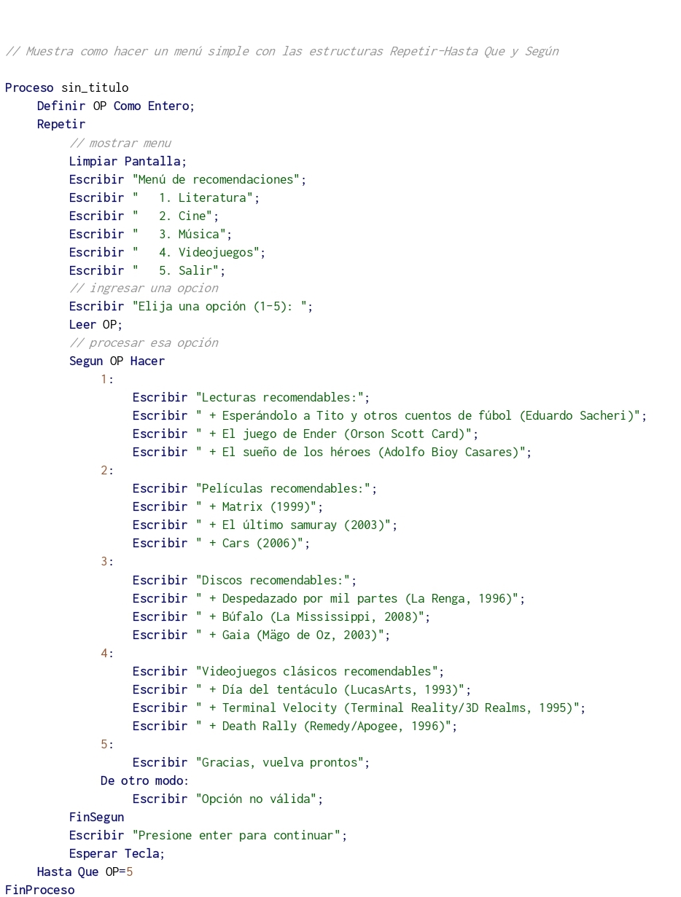

Ciclo Repetir
La instrucción Repetir-Hasta Que ejecuta una secuencia de instrucciones hasta que la condición sea verdadera.
Repetir
<instrucciones>
Hasta Que <condición>
Al ejecutarse esta instrucción, la secuencia de instrucciones que forma el cuerpo del ciclo se ejecuta una vez y luego se evalúa la condición. Si la condición es falsa, el cuerpo del ciclo se ejecuta nuevamente y se vuelve a evaluar la condición. Esto se repite hasta que la condición sea verdadera.
Note que, dado que la condición se evalúa al final, las instrucciones del cuerpo del ciclo serán ejecutadas al menos una vez.
Además, a fin de evitar ciclos infinitos, el cuerpo del ciclo debe contener alguna instrucción que modifique la o las variables involucradas en la condición de modo que en algún momento la condición sea verdadera y se finalice la ejecución del ciclo.
Si se utiliza sintaxis flexible (ver Opciones del Pseudocódigo) se permite opcionalmente utilizar Mientras Que en lugar de Hasta Que, de modo que el conjunto de acciones contenidas en el bucle se ejecuta mientras que la condición sea verdadera. Notar que la palabra Que es la que diferencia el uso de la palabra Mientras en la estructura repetir de la estructura Mientras. Es decir, si se omite la palabra que se considera como el comienzo de un bucle Mientras en lugar de el final de un bucle Repetir.
